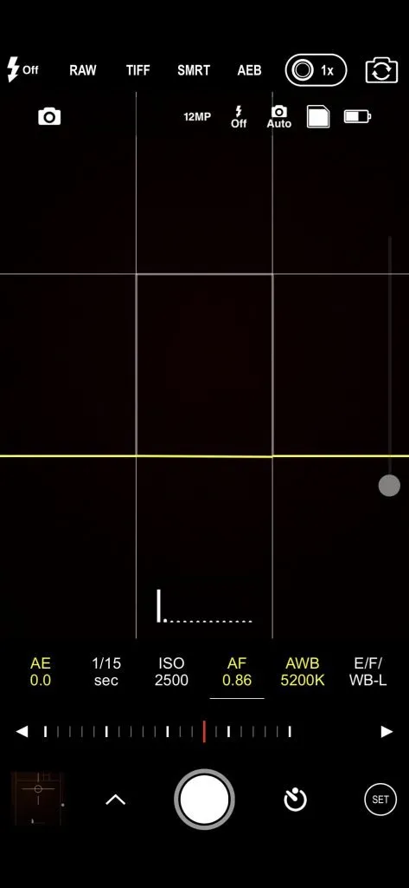

<ion-content [fullscreen]="true">
  <ion-header collapse="condense">
    <ion-toolbar>
      
    </ion-toolbar>
  </ion-header>

  <div class="btn-foto">
    <ion-button routerLink="/confirmar-asis">FOTO</ion-button>
  </div>

</ion-content>